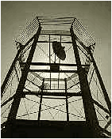

| temperature |
| home page |
|  |
| All specific names mentioned herein are trademarks of Brain Power Incorporated, Miami, Florida. . This unit automatically heat tempers lenses in minutes. All the computer requires is the type of glass and average thickness. Due to uniform cooling of lens surfaces and edges, breakage is minimized. |